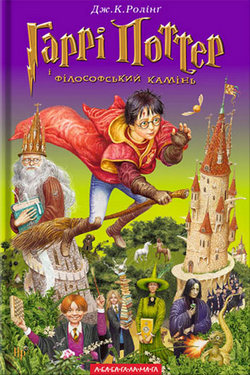
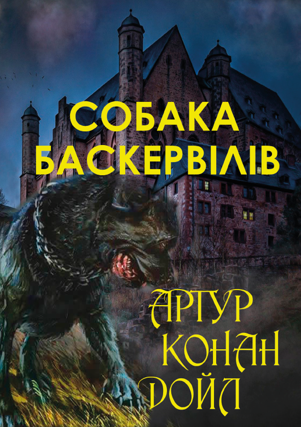
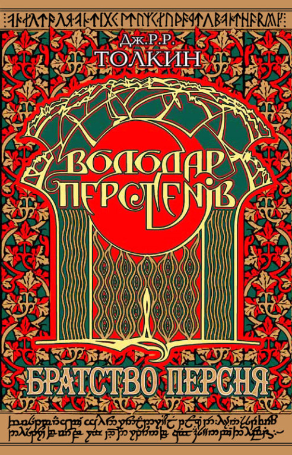
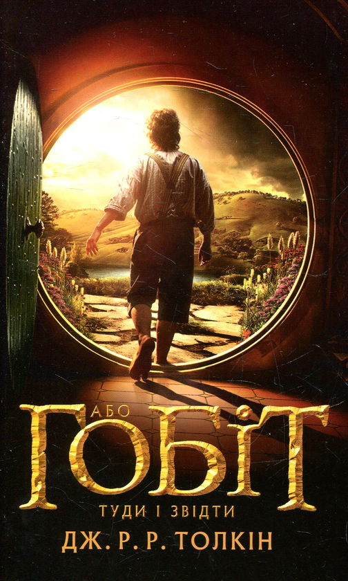

Фантастика
Дюна
Історія Пола Атріда та боротьби великих домів за контроль над пустельною планетою Арракіс.
Повний список рекомендованих творів із коротким описом та оцінками.
Історія Пола Атріда та боротьби великих домів за контроль над пустельною планетою Арракіс.

Роман-попередження про державу тотального стеження та підміну понять.
Перша книга циклу про відьмака Ґеральта, сповнена моральних виборів і фольклору.
Світ майбутнього, де книги перебувають під забороною, а пожежники зобов'язані їх спалювати.
Класичне розслідування Еркюля Пуаро в потязі, що застряг у снігових заметах.

Захоплива розповідь про те, як Homo sapiens пройшов шлях від мисливців до творців цивілізацій.

Початок пригод юного чарівника у стінах Гоґвортсу та його перша зустріч із темними силами.
Пронизлива історія про експеримент над людським розумом, самотність і ціну геніальності.

Розслідування таємничої загибелі сера Чарльза Баскервіля серед туманних боліт Англії.

Початок великого походу крізь Середзем'я заради знищення Персня Влади.

Несподівана подорож Більбо Беґінса до Самотньої гори, сповнена пригод і загадок.
Історія адвоката Аттікуса Фінча, який захищає несправедливо обвинуваченого всупереч упередженням міста.
За вашим запитом книг не знайдено.